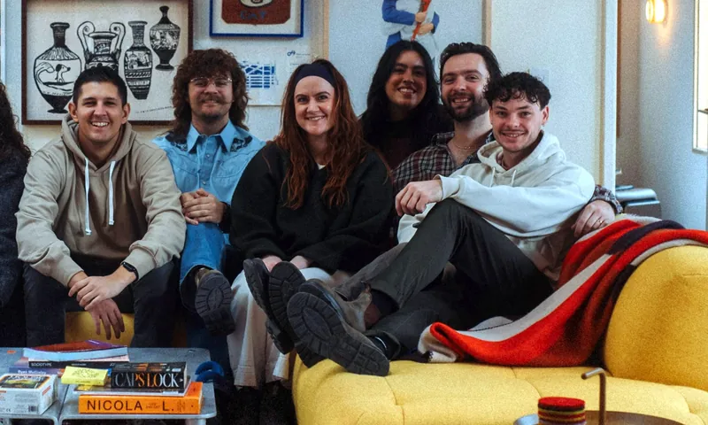
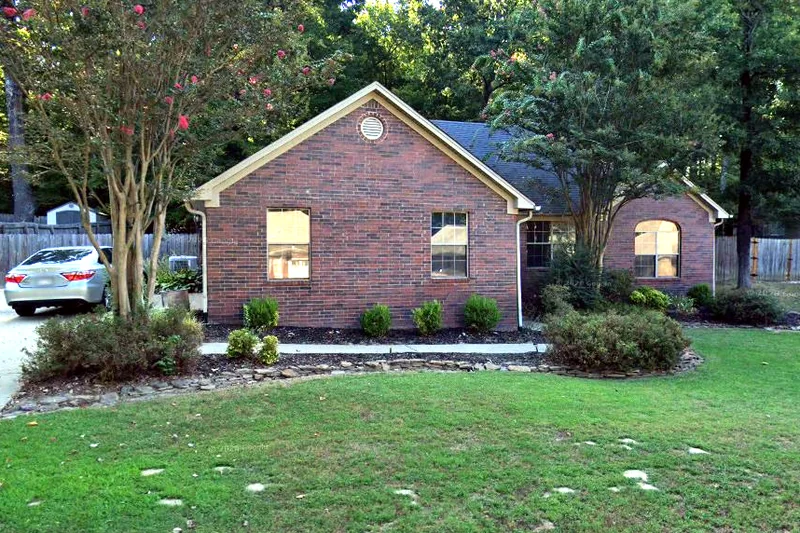

Institute night for young adults in the Little Rock Stake
Every Tuesday at 7, young single and married adults ages 18 to 35 gather in a home in Benton to study the gospel and make friends from across the stake. Members and friends of other faiths are welcome.
Tuesdays at 7:00 PM in Benton, Arkansas

Young adults in the Little Rock Stake are spread thin
Eleven wards and branches stretch from Pinnacle Mountain to Monticello.
A lot of highway between friends
Young adults are scattered across central and south Arkansas, and many branches have only a handful of them.
Lonelier than anyone lets on
In a Harvard survey, 61 percent of Americans ages 18 to 25 reported serious loneliness (Making Caring Common, 2021). Sunday in a family ward can make that sharper.
Faith grows better in company
Questions about the scriptures, dating, school, work and doubt deserve a living room full of people asking the same ones.
Hi, we're Marc and Nikki
Every Tuesday at 7, we open our home in Benton for the Little Rock Stake's institute class.
Whether you're coming straight from work, driving in from Hot Springs or Pine Bluff, or opening the Book of Mormon for the first time, you're welcome here. Single, married, member or friend of another faith, if you're 18 to 35, this class is for you.
Bring your scriptures or the Gospel Library app, and bring a friend if you like. We'll save you a seat.
Marc & Nikki
Tuesday nights at 7 in Benton
Sign up on myInstitute and we'll send you the address.
- Every Tuesday at 7:00 PM
- Our home, about 25 miles southwest of downtown Little Rock
- Bring scriptures or the Gospel Library app
- Free for anyone 18 to 35, and friends are welcome

Upcoming events
Class every Tuesday, plus the Church broadcasts made for young adults.
-
Worldwide Devotional for Young Adults
Elder Quentin L. Cook of the Quorum of the Twelve Apostles speaks, with Sister Mary G. Cook.
Add to calendar -
First Presidency's Christmas Devotional
Music and messages about the birth of Jesus Christ from the First Presidency.
Add to calendar
Your first Tuesday
Three small steps, and the first one can wait until after your visit.
Sign up on myInstitute
Search myinstitute.churchofjesuschrist.org for Little Rock. Friends of other faiths can use Quick Signup with just a name, an email and a birthdate.
Save the date
Add Tuesdays at 7 to your calendar so the week doesn't swallow it.
Knock on the door
Come to the house with your scriptures or your phone, and bring a friend if you like.
Tuesday nights with people who share your faith
A year of Tuesdays adds up to:
- Friends from Little Rock to Hot Springs who know your name
- A scripture habit that outlasts the semester
- Room to ask the questions you have been carrying around
Without a class, too many young adults drift through their twenties alone, one quiet Sunday at a time.
Every ward and branch in the stake is welcome
Institute is open to young adults from all eleven.
- Little Rock WardMeets in Little Rock
- Benton WardMeets in Little Rock
- Pinnacle Mountain WardMeets in Little Rock
- Hot Springs WardMeets in Hot Springs
- Pine Bluff WardMeets in Pine Bluff
- Arkadelphia BranchMeets in Arkadelphia
- Camden BranchMeets in Camden
- Glenwood BranchMeets in Glenwood
- Hope BranchMeets in Hope
- Malvern BranchMeets in Malvern
- Monticello BranchMeets in Monticello
Live north of the river? See the North Little Rock Stake.
Questions people ask before their first Tuesday
When and where does the Little Rock Stake institute class meet?
Tuesdays at 7:00 PM in a home in Benton. Sign up on myInstitute and we'll send you the address. The North Little Rock Stake schedule will appear on its stake tab when it is set.
Who can attend institute?
Anyone ages 18 to 35. Young single adults are the heart of the class, and married young adults are welcome. Where enough students sign up, classes split into ages 18 to 25 and 26 to 35. Adults over 35 can ask their ward or stake about other classes.
Is institute free?
Yes. Institute courses have no cost.
Do I have to be a member of the Church to attend?
No. Friends of other faiths are welcome. The myInstitute Quick Signup was built for them: it asks for a name, an email and a birthdate, with no Church account required, and the institute administrator approves the request.
Can I come without registering?
Yes. Visit a class first and register afterward. Registering near the start of a semester gives you the best chance of earning credit.
We'll save you a seat
Tuesdays at 7:00 PM in Benton. Free for anyone 18 to 35, single or married.
Plan your first Tuesday